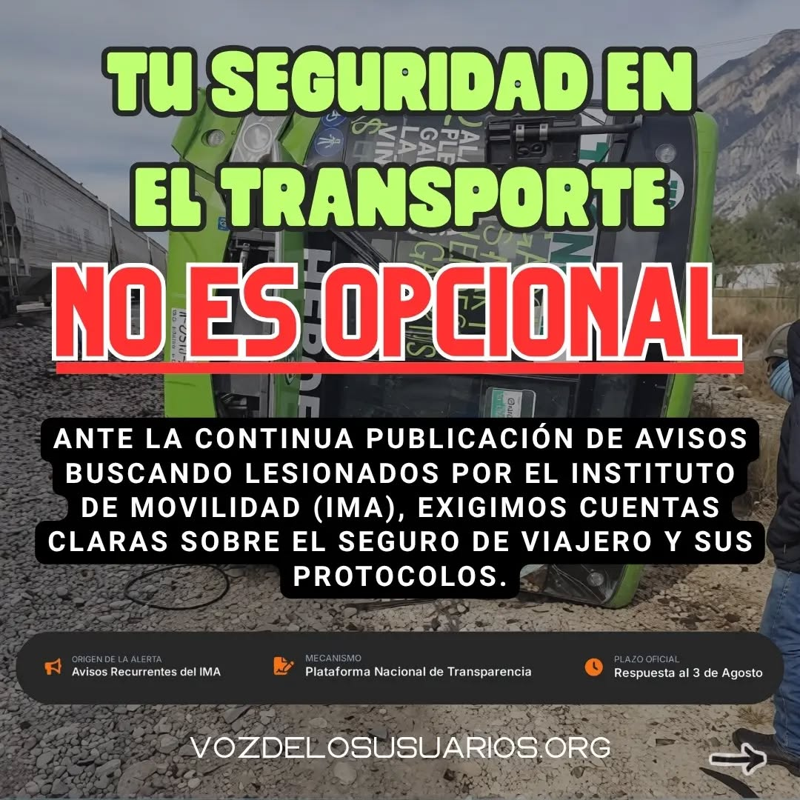
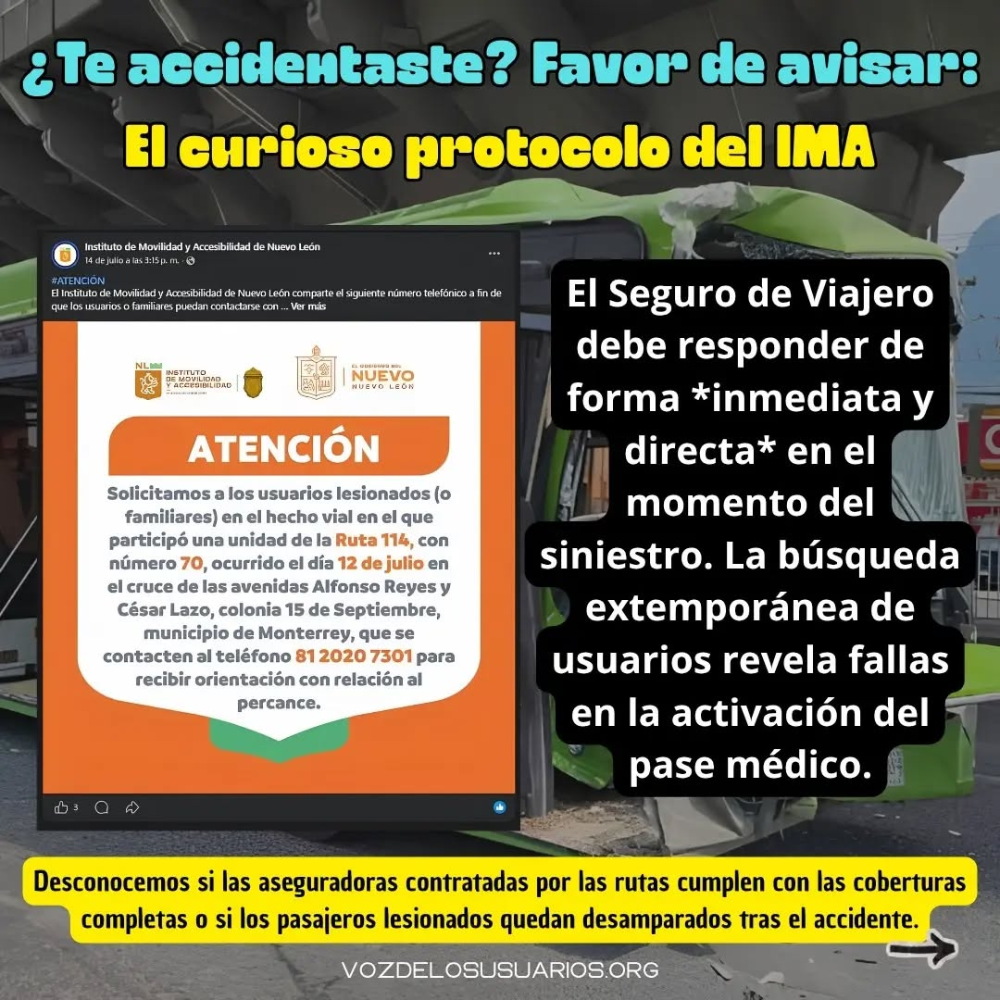
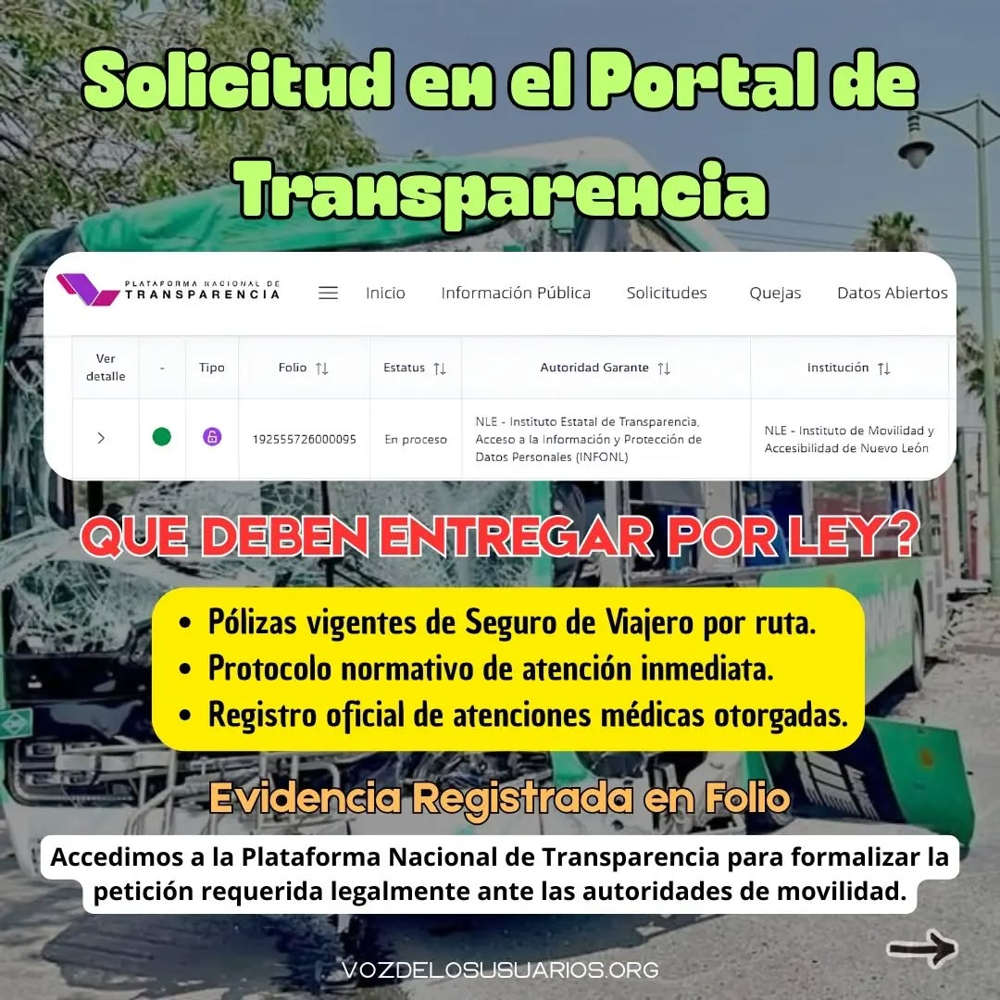
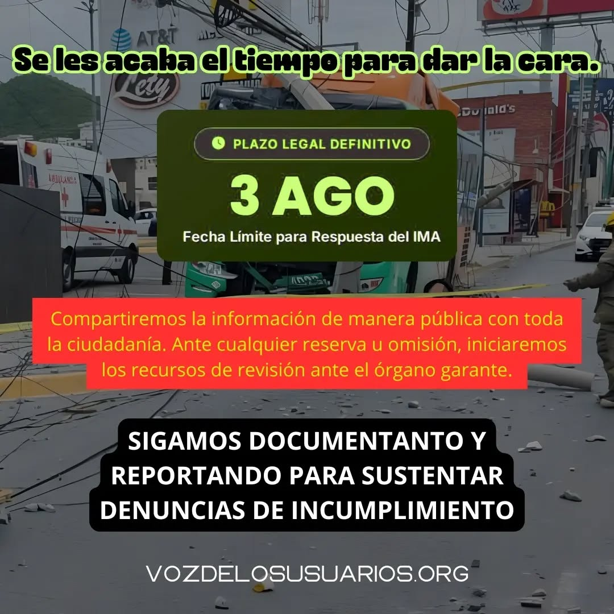

Voz de los Usuarios
Somos un colectivo ciudadano apartidista luchando por los derechos de los usuarios del transporte público.

🌿 Defendemos el derecho a movernos con dignidad, respirar aire limpio y alzar la voz sin miedo.
Somos un frente ciudadano independiente, sin vínculos con partidos políticos ni intereses particulares. Nuestra fuerza nace de la indignación legítima de la gente y de la convicción de que la ciudadanía organizada puede exigir y lograr cambios reales.
Alzar la voz contra los abusos y deficiencias que golpean a las familias de Nuevo León. Buscamos un sistema de transporte público justo y accesible, pero también luchamos por servicios básicos dignos, seguridad, salud y respeto al medio ambiente.
Ser un movimiento fuerte, unido y reconocido, que represente la voz de quienes exigen justicia, equidad y transparencia. Aspiramos a construir una sociedad donde las necesidades de los ciudadanos sean prioridad en las políticas públicas y donde la dignidad no sea negociable.
El 5 de febrero de 2026 presentamos formalmente nuestra Iniciativa Ciudadana ante el Congreso de Nuevo León. Seguimos recolectando firmas para respaldar estos 7 puntos exigidos:
Haz clic en cada etapa para ver los detalles
Seguimos a la espera de la fecha de la próxima Junta de Gobierno. ¡Tu firma suma!
Descarga e imprime el formato de firmas en blanco. Compártelo con tus vecinos, familiares y amigos. ¡Cada firma nos acerca más a un transporte público digno en Nuevo León!
Imprime la hoja en tamaño carta estándar. No importa si es en blanco y negro o a color, pero debe ser completamente legible.
Llena todos los campos exclusivamente con tinta de color azul para certificar que la firma es original y autógrafa.
No se permiten tachaduras, enmendaduras ni el uso de corrector. Si hay un error, deja esa línea vacía y continúa en la siguiente.
Escribe nombres, apellidos y clave de elector (vienen al frente del INE) con letra lo más legible posible. La firma debe coincidir con la de tu credencial.
Se acepta el apoyo con credencial de elector vigente de cualquier estado de la República Mexicana. ¡Todo apoyo a nivel nacional cuenta!
Evita arrugar, manchar o doblar en exceso las hojas para garantizar que el Congreso las reciba en óptimo estado.
Al finalizar el llenado, avísanos por Inbox o mensaje directo (DM) para coordinar la recolección o entrega de las hojas. ¡Agradecemos infinitamente tu apoyo y compromiso!
Te invitamos a acudir a cualquiera de nuestros puntos fijos para plasmar tu firma y apoyar este movimiento:
Café y Librería
Av. Eugenio Garza Sada 275, Col. Caracol, MTY
Espacio Cultural
Matamoros 421 Pte., Centro, MTY
Espacio de encuentro ciudadano
Av. Prof. Moisés Sáenz 717-A, Mitras Centro, MTY
Centro Cultural y Ecológico
San Lorenzo 24, Vista Hermosa, MTY
¡Busca o pregunta por nuestras hojas para firmar! 🐝
Reflexionamos abiertamente sobre el transporte en NL: de las mesas de diálogo en 2025 a la Audiencia Pública 2026, la dilación no detiene el tarifazo. (Haz clic para leer el análisis completo)

Ingresamos una solicitud formal exigiendo pólizas vigentes e historial de indemnizaciones. Estamos a la espera de respuesta oficial. (Haz clic para ver las 4 imágenes y detalles)
Motivo: Para la Iniciativa Ciudadana
Todos los domingos, a partir de las 4:00 PM | Calle Morelos (Centro de Monterrey)
Rumbo a las +5000 firmas. Haz que tu firma sea parte de esta iniciativa ciudadana. ¡Si que sí y ya volvimos a SALIR!
Dudas en WhatsAppEl arte como medio de protesta y fortalecimiento colectivo
Fecha y lugar por definir | Monterrey, N.L.
Usamos el arte como medio de protesta y buscamos crear espacios de convivencia para fortalecer lazos colectivos. ¡Espera la convocatoria próximamente!
Recibir Avisos en WhatsAppRumbo a las siguientes acciones contra el Tarifazo
Fecha y sede por definir | Monterrey, N.L.
Nos preparamos para coordinar el siguiente paso en la defensa del transporte público. Tu voz, experiencia e ideas son la pieza fundamental en este proceso.
Recibir Avisos en WhatsAppTotal de reportes recibidos: 0
Cargando estadísticas en tiempo real...
La movilización cuesta. Tu donativo voluntario nos ayuda a imprimir más hojas para firmas, fabricar lonas, mantener el sitio web activo y seguir luchando. ¡Cualquier ayuda suma!
¿Quieres ser parte del cambio? Forma parte de nuestro colectivo ciudadano 🐝
Registro, Evaluación y Admisión Gradual de Voluntarios — Colectivo Voz de los Usuarios
Responsable: Colectivo Voz de los Usuarios (CVDLU) | Ubicación: Monterrey, Nuevo León, México | Contacto ARCO: cvdlu.buzon@gmail.com | Teléfono: 9987864260
En cumplimiento con la Ley Federal de Protección de Datos Personales en Posesión de los Particulares (LFPDPPP) y su Reglamento, el Colectivo Voz de los Usuarios (CVDLU) pone a su disposición el presente Aviso de Privacidad Integral para regular el tratamiento de los datos personales proporcionados en las solicitudes de ingreso a nuestro equipo de voluntarios.
Identificación y Contacto: Nombre completo, apodo/nombre de preferencia, edad, municipio de residencia y medios de contacto (correo electrónico, teléfono y/o redes sociales).
Contexto Socio-laboral: Ocupación actual.
Perfil Organizativo: Motivaciones personales, experiencia previa en movimientos comunitarios, habilidades a aportar, disponibilidad de tiempo y expectativas.
Criterio y Alineación Social: Aceptación expresada de principios apartidistas, horizontales y perspectiva crítica sociopolítica local.
Trato Especial de Datos Personales Sensibles (Salud): El formulario recopila información sobre estado de salud o tratamientos médicos vigentes. Este dato es clasificado formalmente como Dato Personal Sensible conforme a la LFPDPPP. Finalidad exclusiva de seguridad para proteger la salud e integridad física en brigadas y eventos públicos.
Evaluación y filtro de perfil, estructura organizativa por niveles, seguridad e integridad física en campo y canales de comunicación.
Cláusula de no comercialización: El CVDLU no comercializa ni comparte sus datos con fines mercadotécnicos, comerciales ni de proselitismo político.
El llenado del formulario web constituye únicamente una solicitud de ingreso inicial. El colectivo se reserva la facultad discrecional de aplicar etapas posteriores de verificación antes de otorgar acceso a espacios de decisión o canales restringidos.
El CVDLU se compromete a no transferir, vender ni compartir sus datos personales con terceros, partidos políticos, entes gubernamentales ni empresas privadas.
Dirigir solicitudes por escrito a cvdlu.buzon@gmail.com o al teléfono 9987864260 en Monterrey, N.L. Plazo de atención: máximo 15 días hábiles.
Las versiones vigentes se mantendrán disponibles en este sitio. Al enviar la solicitud, el titular manifiesta expresamente su conformidad.
Última actualización: Julio de 2026 | Colectivo Voz de los Usuarios
📷 Documentación Oficial (Haz clic en una imagen para ampliarla):



Como parte de nuestras acciones colectivas en defensa de los usuarios del transporte público en Nuevo León, hemos ingresado una solicitud formal a través del Portal Nacional de Transparencia para exigir cuentas claras sobre la cobertura y aplicación del Seguro de Viajero.
El Seguro de Viajero no es opcional: es una obligación legal para todos los concesionarios y rutas del transporte público. Sin embargo, cuando ocurren accidentes, la constante es la falta de pases médicos, la evasión de responsabilidades y el abandono a las víctimas.
La solicitud ha sido registrada exitosamente en la plataforma. Nos encontramos a la espera del término legal para recibir la respuesta oficial por parte de las autoridades competentes. Haremos públicos los resultados en cuanto nos sean notificados.
A raíz de las inquietudes de nuestros seguidores y de la comunidad movilizada, reflexionamos abiertamente sobre el panorama del transporte público en Nuevo León y la postura de nuestro colectivo frente a los procesos convocados por la autoridad.
Al examinar lo sucedido entre abril de 2025 y la Audiencia Pública de julio de 2026, el patrón es contundente: la autoridad utiliza las "mesas de diálogo" y los formalismos administrativos como una estrategia de dilación para ganar tiempo mientras el tarifazo jamás se detiene. Cuidar la causa exige mantener la firmeza y no caer en dinámicas de desgaste que solo benefician al estado.
Pasar de ofrecer mesas técnicas en 2025 a firmar actas para mesas bimestrales en 2026 no constituye un avance; es simulación. Acudir a reuniones con mandos intermedios sin capacidad legal de decisión, o recibir capacitaciones en lugar de unidades nuevas y funcionales en las rutas colapsadas, neutraliza la protesta social mientras el costo del pasaje sigue subiendo día con día.
Los espacios de interlocución deben ser genuinamente abiertos, transparentes e incluyentes. Aclaramos que no lo decimos por un interés personal —nuestro colectivo ni siquiera pretendía integrarnos a esa mesa—, sino por la gravedad de validar exclusiones de representaciones legítimas, como la que existe formalmente ante la Junta de Gobierno.
Genera inquietud ver cómo en lo público se apela al apoyo del auditorio preguntando quién quiere sumarse, mientras que detrás del telón se cerraron las puertas y se impidió el paso a vocerías clave. Ese tipo de prácticas fragmentan el movimiento y alimentan la división que a la autoridad le conviene.
No juzgamos intenciones, pero al analizar los hechos y la historia reciente, es indispensable señalar estas inconsistencias para no prestar la legitimidad de la movilización ciudadana a procesos excluyentes o dilatorios. La dignidad y los derechos de los usuarios del transporte no son negociables.
Registro, Evaluación y Admisión Gradual de Voluntarios — Colectivo Voz de los Usuarios
En cumplimiento con la Ley Federal de Protección de Datos Personales en Posesión de los Particulares (LFPDPPP) y su Reglamento, el Colectivo Voz de los Usuarios (CVDLU), con domicilio en la ciudad de Monterrey, Nuevo León, México, pone a su disposición el presente Aviso de Privacidad Integral para regular el tratamiento de los datos personales proporcionados en las solicitudes de ingreso a nuestro equipo de voluntarios.
Para procesar el registro inicial a la sección de voluntarios en nuestro sitio web, recabamos las siguientes categorías de información:
El formulario recopila información sobre estado de salud o tratamientos médicos vigentes ("¿Padeces alguna enfermedad o estás bajo algún tratamiento que debamos considerar?"). Este dato es clasificado formalmente como Dato Personal Sensible conforme a la LFPDPPP.
Finalidad exclusiva de seguridad: Proteger la salud, integridad física y bienestar personal durante la participación en brigadas, marchas, volanteos u operaciones públicas del colectivo, permitiendo actuar oportunamente ante eventualidades médicas.
Sus datos personales serán tratados de forma confidencial para las siguientes finalidades primarias y necesarias:
El llenado del formulario web constituye únicamente una solicitud de ingreso inicial. Por razones de seguridad interna, integridad del colectivo y prevención de perfiles incompatibles o infiltraciones, el colectivo se reserva la facultad discrecional de aplicar etapas posteriores de verificación (entrevistas presenciales o telefónicas, participación observada en actividades comunitarias) antes de otorgar acceso a espacios de toma de decisiones o canales de comunicación interna restringidos. La metodología y criterios puntuales de evaluación interna son de carácter estrictamente confidencial y de uso exclusivo de la coordinación del colectivo.
El Colectivo Voz de los Usuarios se compromete a no transferir, vender ni compartir sus datos personales con terceros, partidos políticos, entes gubernamentales ni empresas privadas. El manejo de la información es exclusivo del equipo coordinador bajo protocolos de absoluta confidencialidad.
Usted tiene derecho a conocer qué datos tenemos registrados de su persona, para qué los utilizamos y las condiciones de su tratamiento (Acceso); solicitar su corrección en caso de inexactitud o actualización (Rectificación); requerir su eliminación de nuestras bases de datos (Cancelación); u oponerse al uso de sus datos para fines específicos (Oposición).
Deberá dirigir su solicitud por escrito al equipo de atención del colectivo a través de los siguientes datos:
Requisitos: Adjuntar nombre completo del titular, descripción clara de la solicitud y medio de respuesta. Las solicitudes serán atendidas en un plazo máximo de 15 días hábiles.
El presente aviso puede actualizarse debido a cambios normativos o adecuaciones organizativas de nuestras actividades comunitarias. Las versiones vigentes estarán siempre disponibles para consulta en este sitio web oficial.
Al enviar el formulario de registro de nuevos voluntarios, el titular manifiesta expresamente haber leído y comprendido las condiciones de este Aviso de Privacidad, autorizando el tratamiento de sus datos personales y sensibles bajo los términos expuestos.